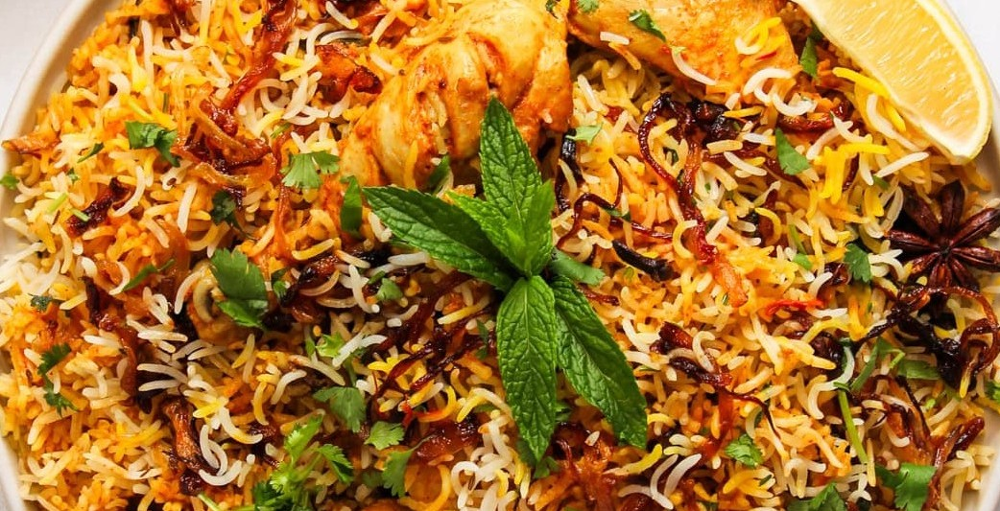

Sestavine
- 200g Basmati riža
- 500g piščanca
- 2 rdeče čebule
- 100g Ghee
- 2 srednja paradižnika
- svež čili po želji
- 200g grški jogurt
- 1 lovorjev list
- cel kardamon
- muškatni orešček
- klinčki
- česen
- ingver
- kurkuma
- mlet čili
- celi cimet
- 100g masla
- 100ml sladke smetane
- poljubno: žafran
- sveža meta
- svež koriander
Postopek
Priprava
- Narežemo 1 rdečo čebulo na tanke trakce
- Nasekljamo 1 rdečo čebulo
- Operemo riž
Jhol
- Kuhamo maslo in smetano z žafranom
Omaka
- Na Gheeju popražimo nasekljano rdečo čebulo
Riž
- V posoljeno vrelo vodo damo lovorjev list, kardamon, klinčke, cimet, muškatni orešček.
- Dodamo riž in ga kuhamo dokler ni približno 70-80% kuhan (aldente).
Sestava in kuhanje Biryanija
- Na dno posode dodamo malo jhola
- Sloj riža
- Ostale stvari
- Kuhamo v pečici 20-25min